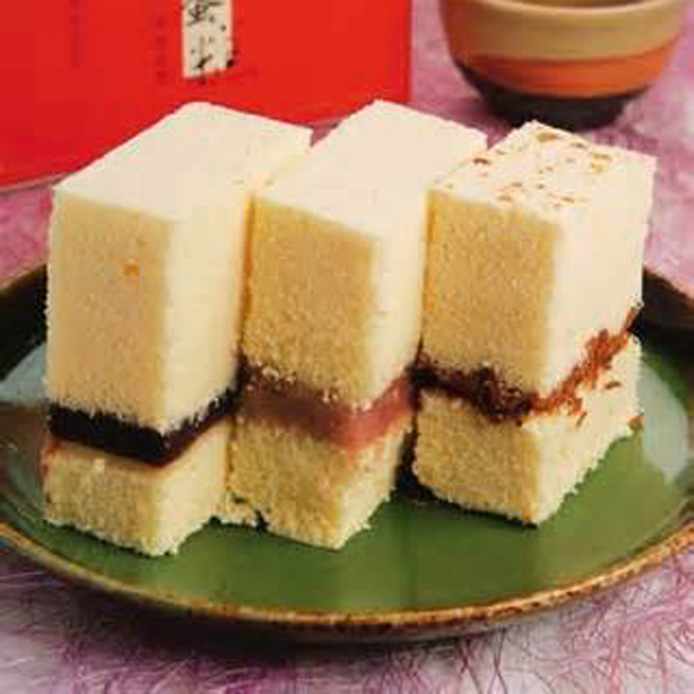

淵明餅舖 水蒸蛋糕
淵明餅舖。水蒸蛋糕。新竹代表性伴手禮。首推組合肉燥+芋頭。
服務選項: 外帶 · 外送 · 禁止內用
地址： 300新竹市北區中山路112號
- 營業時間：
- 星期日 09:00–21:00
- 星期一 09:00–21:00
- 星期二 09:00–21:00
- 星期三 09:00–21:00
- 星期四 09:00–21:00
- 星期五 09:00–21:00
- 星期六 09:00–21:00